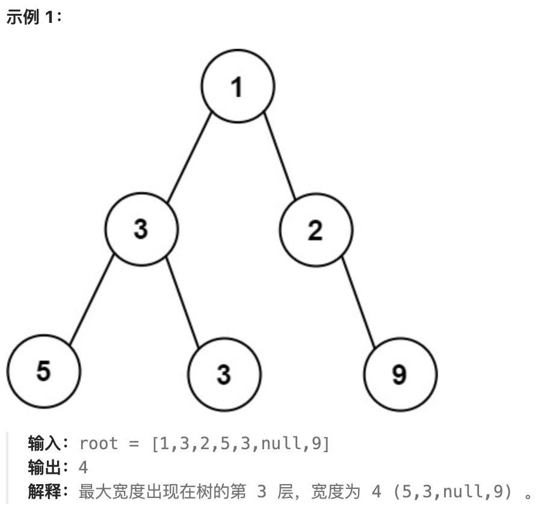

二叉树
对于二叉树的常见几种解题策略
- 递归
- DFS
- BFS
接下来，我们就围绕着这几点进行展开
例题
二叉树的最大宽度
题目来源字节
题目来源
给你一棵二叉树的根节点root，返回树的最大宽度。
树的最大宽度是所有层中最大的宽度。
每一层的宽度被定义为该层最左和最右的非空节点（即，两个端点）之间的长度。将这个二叉树视作与满二叉树结构相同，两端点间会出现一些延伸到这一层的null节点，这些null节点也计入长度。
题目数据保证答案将会在 32 位 带符号整数范围内。

下面是简单的代码实现:
1
2
3
4
5
6
7
8
9
10
11
12
13
14
15
16
17
18
19
20
21
22
23
24
25
26
27
28
29
30
31
32
33 | /**
* Definition for a binary tree node.
* struct TreeNode {
* int val;
* TreeNode *left;
* TreeNode *right;
* TreeNode() : val(0), left(nullptr), right(nullptr) {}
* TreeNode(int x) : val(x), left(nullptr), right(nullptr) {}
* TreeNode(int x, TreeNode *left, TreeNode *right) : val(x), left(left), right(right) {}
* };
*/
class Solution {
public:
int widthOfBinaryTree(TreeNode* root) {
unsigned long long res = 1;
vector<pair<TreeNode*, unsigned long long>>arr;
arr.emplace_back(root,1L);
while(!arr.empty()){
vector<pair<TreeNode*,unsigned long long>>tmp;
for(auto &[node,index]:arr){
if(node->left)
tmp.emplace_back(node->left,index*2);
if(node->right)
tmp.emplace_back(node->right,index*2+1);
}
res = max(res,arr.back().second-arr[0].second+1);
arr = move(tmp);
}
return res;
}
};
|
BFS来进行层序遍历，获得每一层的最左和最右边非null节点，从而获得每一层的宽度，依次遍历从而获得最大的二叉树宽度。
这里提一句，我们使用了 move 将vector<pair<TreeNode* , unsigned long long>> tmp 复制给了 res
对于 move 可以参考